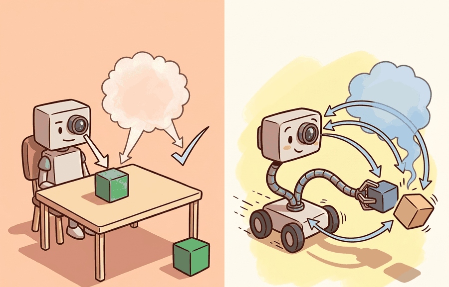

"A classifier answers a question once. An embodied agent answers, then inherits the consequences."
Section 1.1

A static model maps an input to an output and is scored on that output. An embodied agent maps a stream of observations to actions that change the next stream of observations, and is scored on the resulting behavior over time. This is not a difference of degree. A predictor is a function on a fixed distribution; an agent is a policy in a controlled Markov process whose state distribution is induced by the policy itself. Almost everything that makes embodied AI hard, and almost every technique in this book, follows from that one change.
The formal object changes
A static predictor learns a function $f(x)=y$. The input $x$ is drawn from a fixed distribution $\mathcal{D}$, the output is scored by a loss $\ell(f(x),y)$, and the example ends. Crucially, $\mathcal{D}$ does not depend on $f$: the test set is the same whether the model is good or bad.
An embodied agent acts inside a controlled Markov process. At step $t$ it receives an observation $o_t$, maintains a belief or internal state $b_t$, chooses an action $a_t \sim \pi(\cdot \mid b_t)$, and the world transitions $s_{t+1} \sim P(\cdot \mid s_t, a_t)$, emitting $o_{t+1}$. The unit of analysis is the trajectory $\tau = (o_0, a_0, o_1, a_1, \ldots, o_T)$, and the score is a functional of the policy,
$$J(\pi) = \mathbb{E}_{\tau \sim \pi}\!\left[\sum_{t=0}^{T} r_t - \lambda \sum_{t=0}^{T} c_t\right],$$
where $r_t$ measures task progress, $c_t$ measures cost such as collision risk, energy, or recovery effort, and $\lambda$ encodes how much the evaluator penalizes unsafe or expensive behavior. The decisive term is the subscript on the expectation: $\tau \sim \pi$. The distribution of states the agent is judged on is produced by the agent. Improve the policy and you change the test set. This single coupling, absent from $f(x)=y$, is the source of distribution shift, compounding error, exploration cost, and the need for closed-loop evaluation.
Why error compounds: the horizon penalty
The practical consequence of $\tau \sim \pi$ is that imitation does not behave like supervised learning. Suppose a policy is trained to copy an expert and makes a mistake with probability at most $\epsilon$ on states drawn from the expert's distribution. In a static setting the expected number of mistakes over $T$ examples is $O(\epsilon T)$, linear and benign. In the closed loop, a single mistake moves the agent to a state the expert never visited, where the policy has no guarantee at all and is more likely to err again. Ross, Gordon, and Bagnell showed that this drives the expected cost of behavior cloning to $O(\epsilon T^2)$, quadratic in the horizon. The extra factor of $T$ is the price of the feedback coupling: errors are not independent, they steer the agent into regions where further errors are likely.
A static benchmark hides the cost of being wrong because the next example arrives regardless. In a closed loop the agent's output becomes part of the next input distribution, so per-step error compounds super-linearly with the horizon. This is why "high offline accuracy" and "reliable on the robot" are different claims, and why later chapters reach for DAgger (Chapter 21), closed-loop fine-tuning, and on-policy correction.
A minimal demonstration of compounding
The simulation below strips the phenomenon to its core. An agent is "on the expert's state distribution" until a per-step error knocks it off; once off, it rarely recovers because it was never trained on those states. We measure how off-distribution time grows with the horizon while holding the per-step error budget fixed. Linear growth would mean errors are independent; super-linear growth is the embodied penalty.
# Compounding of behavior-cloning error in a closed loop.
# Holds per-step error fixed and varies the horizon; off-distribution time grows super-linearly.
import numpy as np
def rollout_off_distribution_steps(horizon, step_error_prob, recover_prob, rng):
on_track = True # the agent starts on the expert's state distribution
off_steps = 0
for _ in range(horizon):
if on_track:
if rng.random() < step_error_prob: # a wrong action leaves the expert's distribution
on_track = False
else:
off_steps += 1 # time spent in states the policy never trained on
if rng.random() < recover_prob: # recovery is rare: no supervision off-distribution
on_track = True
return off_steps
rng = np.random.default_rng(0)
print(f"{'horizon':>8} {'off-dist steps':>16} {'steps / horizon':>16}")
for horizon in (10, 40, 160, 640):
off = np.mean([
rollout_off_distribution_steps(horizon, step_error_prob=0.02, recover_prob=0.05, rng=rng)
for _ in range(20000)
])
print(f"{horizon:>8} {off:>16.2f} {off / horizon:>16.3f}")The toy above hand-rolls one state bit. Real experiments need reproducible episodes with observation and action spaces, termination, truncation, and seeding. gymnasium provides exactly that contract through reset() and step(), so a closed-loop evaluation produces comparable logs across policies. Use the hand-built version to understand compounding; use Gymnasium (Chapter 10) the moment you need repeatable measurements.
Where point accuracy misleads
Because the state distribution is policy-induced, where an error occurs matters more than how often. An error near a reversible state is cheap; the same error rate concentrated near an irreversible transition (a collision, a dropped fragile object, a wheel over a ledge) is catastrophic. Two policies with identical aggregate accuracy can have opposite closed-loop value if one fails preferentially near irreversible states. The design response is to evaluate on trajectories, to weight cost by reversibility, and often to prefer a lower-confidence model with a reject or stop option over a higher-accuracy model with no abstention.
A bin-picking team improved their grasp detector's image-level accuracy and saw completed picks per hour fall. The new detector's residual errors clustered on transparent packaging, where a bad grasp occluded the target and triggered a multi-step recovery. Switching to a slightly less accurate detector with a calibrated reject option raised throughput, because it abstained near the irreversible failure instead of acting confidently into it. The lesson is structural, not specific: optimize the trajectory functional $J(\pi)$, not the per-frame loss.
Reporting offline metrics (action MSE, top-1 grasp accuracy, validation loss) as if they predicted on-robot reliability. They are necessary, not sufficient. A policy can minimize offline loss and still be unsafe in the loop because offline data does not contain the off-distribution states the policy will visit once it is in control. Always pair an offline number with at least one closed-loop rollout metric co-computed on the same checkpoint.
Vision-language-action models such as OpenVLA and $\pi_0$ (Chapter 34) collapse predictor and controller into one network that emits actions from image and language context. They inherit the compounding problem in full: the open question is not whether a large model can propose plausible actions, but whether its closed loop stays calibrated under distribution shift, latency, and contact, and how cheaply it can be corrected on-policy when it drifts. Action chunking, flow-matching action heads, and on-robot fine-tuning are current answers; none fully removes the horizon penalty.
Embodied AI begins where output quality stops being sufficient. The object of study is the closed-loop trajectory induced by the policy, and the defining mathematical fact is that the agent generates its own evaluation distribution, which turns benign per-step error into a horizon-dependent penalty.
Modify Code 1.1.1 so that recover_prob increases when the agent has been off-distribution for several steps (a crude model of a recovery policy). Plot off-distribution fraction versus horizon for recovery probabilities 0.05, 0.2, and 0.5. At what recovery rate does the growth look linear again, and what does that imply about the value of DAgger-style on-policy correction?
Take any classifier you have trained. Write its embodied wrapper on paper: define the observation, the action that consumes the prediction, the transition consequence of a wrong action, one irreversible state, the trajectory metric, and the offline metric. Identify one case where the offline metric improves while the trajectory metric degrades.
What's Next?
Section 1.2 develops the closed loop itself: sensing, deciding, acting, and observing consequences as one coupled process, and the cybernetic lineage that first formalized it.
Section References
Ross, S., Gordon, G., and Bagnell, J. A. "A Reduction of Imitation Learning and Structured Prediction to No-Regret Online Learning." AISTATS (2011). https://arxiv.org/abs/1011.0686
The DAgger paper. Source of the $O(\epsilon T^2)$ compounding result for behavior cloning and the on-policy correction that reduces it to $O(\epsilon T)$.
Sutton, R. S., and Barto, A. G. "Reinforcement Learning: An Introduction." (2018). http://incompleteideas.net/book/the-book-2nd.html
The reference for controlled Markov processes, returns, policies, and trajectory-level objectives.
Kim, M. J. et al. "OpenVLA: An Open-Source Vision-Language-Action Model." (2024). https://arxiv.org/abs/2406.09246
A concrete instance of the predictor-controller collapse discussed at the frontier, revisited in depth in Chapter 34.